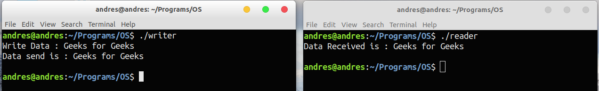

Prerequisite : Inter Process Communication
A message queue is a linked list of messages stored within the kernel and identified by a message queue identifier. A new queue is created or an existing queue opened by msgget().
New messages are added to the end of a queue by msgsnd(). Every message has a positive long integer type field, a non-negative length, and the actual data bytes (corresponding to the length), all of which are specified to msgsnd() when the message is added to a queue. Messages are fetched from a queue by msgrcv(). We don’t have to fetch the messages in a first-in, first-out order. Instead, we can fetch messages based on their type field.
All processes can exchange information through access to a common system message queue. The sending process places a message (via some (OS) message-passing module) onto a queue which can be read by another process. Each message is given an identification or type so that processes can select the appropriate message. Process must share a common key in order to gain access to the queue in the first place.

System calls used for message queues:
ftok(): is use to generate a unique key. msgget(): either returns the message queue identifier for a newly created message queue or returns the identifiers for a queue which exists with the same key value. msgsnd(): Data is placed on to a message queue by calling msgsnd(). msgrcv(): messages are retrieved from a queue. msgctl(): It performs various operations on a queue. Generally it is use to destroy message queue.
MESSAGE QUEUE FOR WRITER PROCESS
// C Program for Message Queue (Writer Process)
#include <stdio.h>
#include <sys/ipc.h>
#include <sys/msg.h>
// structure for message queue
struct mesg_buffer {
long mesg_type;
char mesg_text[100];
} message;
int main()
{
key_t key;
int msgid;
// ftok to generate unique key
key = ftok("progfile", 65);
// msgget creates a message queue
// and returns identifier
msgid = msgget(key, 0666 | IPC_CREAT);
message.mesg_type = 1;
printf("Write Data : ");
gets(message.mesg_text);
// msgsnd to send message
msgsnd(msgid, &message, sizeof(message), 0);
// display the message
printf("Data send is : %s \n", message.mesg_text);
return 0;
}
MESSAGE QUEUE FOR READER PROCESS
// C Program for Message Queue (Reader Process)
#include <stdio.h>
#include <sys/ipc.h>
#include <sys/msg.h>
// structure for message queue
struct mesg_buffer {
long mesg_type;
char mesg_text[100];
} message;
int main()
{
key_t key;
int msgid;
// ftok to generate unique key
key = ftok("progfile", 65);
// msgget creates a message queue
// and returns identifier
msgid = msgget(key, 0666 | IPC_CREAT);
// msgrcv to receive message
msgrcv(msgid, &message, sizeof(message), 1, 0);
// display the message
printf("Data Received is : %s \n",
message.mesg_text);
// to destroy the message queue
msgctl(msgid, IPC_RMID, NULL);
return 0;
}
Output:
